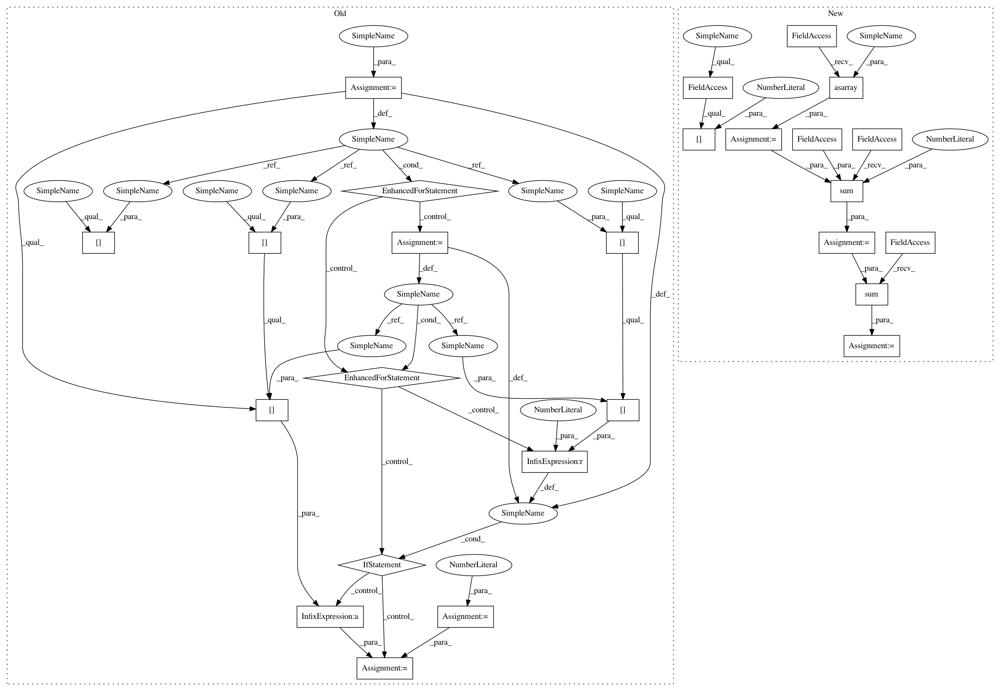

ca09dcecea454e6552a7f30e57aef1dc4f2f295e,pgmpy/estimators/StructureScore.py,BicScore,local_score,#BicScore#Any#Any#,246
Before Change
sample_size = len(self.data)
num_parents_states = float(len(state_counts.columns))
score = 0
for (
parents_state
) in state_counts: // iterate over df columns (only 1 if no parents)
conditional_sample_size = sum(state_counts[parents_state])
for state in var_states:
if state_counts[parents_state][state] > 0:
score += state_counts[parents_state][state] * (
log(state_counts[parents_state][state])
- log(conditional_sample_size)
)
score -= 0.5 * log(sample_size) * num_parents_states * (var_cardinality - 1)
return score
After Change
var_cardinality = len(var_states)
state_counts = self.state_counts(variable, parents)
sample_size = len(self.data)
num_parents_states = float(state_counts.shape[1])
counts = np.asarray(state_counts)
log_likelihoods = np.zeros_like(counts, dtype=np.float_)
// Compute the log-counts
np.log(counts, out=log_likelihoods, where=counts > 0)
// Compute the log-conditional sample size
log_conditionals = np.sum(counts, axis=0, dtype=np.float_)
np.log(log_conditionals, out=log_conditionals, where=log_conditionals > 0)
// Compute the log-likelihoods
log_likelihoods -= log_conditionals
log_likelihoods *= counts
score = np.sum(log_likelihoods)
score -= 0.5 * log(sample_size) * num_parents_states * (var_cardinality - 1)
return score
In pattern: SUPERPATTERN
Frequency: 3
Non-data size: 26
Instances
Project Name: pgmpy/pgmpy
Commit Name: ca09dcecea454e6552a7f30e57aef1dc4f2f295e
Time: 2020-08-11
Author: tristandeleu@users.noreply.github.com
File Name: pgmpy/estimators/StructureScore.py
Class Name: BicScore
Method Name: local_score
Project Name: pgmpy/pgmpy
Commit Name: ca09dcecea454e6552a7f30e57aef1dc4f2f295e
Time: 2020-08-11
Author: tristandeleu@users.noreply.github.com
File Name: pgmpy/estimators/StructureScore.py
Class Name: BicScore
Method Name: local_score
Project Name: pgmpy/pgmpy
Commit Name: ca09dcecea454e6552a7f30e57aef1dc4f2f295e
Time: 2020-08-11
Author: tristandeleu@users.noreply.github.com
File Name: pgmpy/estimators/StructureScore.py
Class Name: BDeuScore
Method Name: local_score
Project Name: pgmpy/pgmpy
Commit Name: ca09dcecea454e6552a7f30e57aef1dc4f2f295e
Time: 2020-08-11
Author: tristandeleu@users.noreply.github.com
File Name: pgmpy/estimators/StructureScore.py
Class Name: K2Score
Method Name: local_score